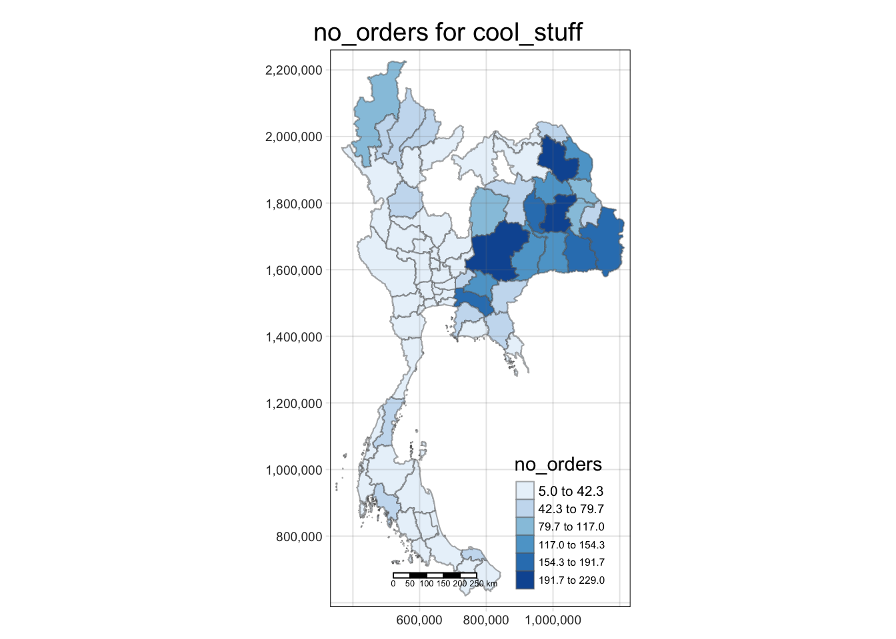

pacman::p_load(sf, tmap, tidyverse, sfdep, DT, patchwork, ggplot2)Approach
1 Installing packages
2 Data Wrangling
2.1 Geospatial Data
To create map plots, we require shape files of Thailand to create the boundaries of each state for map plotting. We used the dataset from HDX accessible here. As we wanted to analyse patterns across states, ADM1 is used.
TH_ADM1<-st_read(dsn="data/geospatial/shapefiles",
layer="tha_admbnda_adm1_rtsd_20220121") |>
st_transform(24047) |> #Since the coordinate reference system is not set to the CRS that thailand uses, we use st_transform to change it to Thailans CRS (24047).
arrange(ADM1_EN) |>
select(ADM1_EN, geometry)Reading layer `tha_admbnda_adm1_rtsd_20220121' from data source
`/Users/pengyouyun/youyunpeng/lomocase/approach/data/geospatial/shapefiles'
using driver `ESRI Shapefile'
Simple feature collection with 77 features and 16 fields
Geometry type: MULTIPOLYGON
Dimension: XY
Bounding box: xmin: 97.34336 ymin: 5.613038 xmax: 105.637 ymax: 20.46507
Geodetic CRS: WGS 84A check for duplicates is done below:
TH_ADM1$ADM1_EN[duplicated(TH_ADM1$ADM1_EN)==TRUE] #check for duplicatescharacter(0)Since there are no duplicates, we can continue with our analysis!
2.2 Aspatial Data
The necessary datasets we are interested in are read into R’s environment below:
consumer_location<-read.csv("data/001_lomo_customers_dataset.csv")
products<-read_csv("data/004_lomo_products_dataset.csv")Rows: 32340 Columns: 9
── Column specification ────────────────────────────────────────────────────────
Delimiter: ","
chr (2): product_id, product_category_name
dbl (7): product_name_lenght, product_description_lenght, product_photos_qty...
ℹ Use `spec()` to retrieve the full column specification for this data.
ℹ Specify the column types or set `show_col_types = FALSE` to quiet this message.products_category<-read_csv("data/005_lomo_product_category_name_translation.csv")Rows: 71 Columns: 2
── Column specification ────────────────────────────────────────────────────────
Delimiter: ","
chr (2): product_category_name_portugese, product_category_name_english
ℹ Use `spec()` to retrieve the full column specification for this data.
ℹ Specify the column types or set `show_col_types = FALSE` to quiet this message.consumer_orders<-read.csv("data/006_lomo_orders_dataset.csv")
order_items<-read_csv("data/007_lomo_order_items_dataset.csv")Rows: 112650 Columns: 7
── Column specification ────────────────────────────────────────────────────────
Delimiter: ","
chr (4): order_id, product_id, seller_id, shipping_limit_date
dbl (3): order_item_id, price, freight_value
ℹ Use `spec()` to retrieve the full column specification for this data.
ℹ Specify the column types or set `show_col_types = FALSE` to quiet this message.payment<-read_csv("data/008_lomo_order_payments_dataset.csv")Rows: 103886 Columns: 5
── Column specification ────────────────────────────────────────────────────────
Delimiter: ","
chr (2): order_id, payment_type
dbl (3): payment_sequential, payment_installments, payment_value
ℹ Use `spec()` to retrieve the full column specification for this data.
ℹ Specify the column types or set `show_col_types = FALSE` to quiet this message.reviews<-read_csv("data/009_lomo_order_reviews_dataset.csv")Rows: 100000 Columns: 7
── Column specification ────────────────────────────────────────────────────────
Delimiter: ","
chr (6): review_id, order_id, review_comment_title, review_comment_message, ...
dbl (1): review_score
ℹ Use `spec()` to retrieve the full column specification for this data.
ℹ Specify the column types or set `show_col_types = FALSE` to quiet this message.First we want to create a dataframe that aggregates consumer orders and payment amount on a state level
consumer_orders_payment<-consumer_orders |>
inner_join(payment) #joining order and payment infoJoining with `by = join_by(order_id)`Warning in inner_join(consumer_orders, payment): Each row in `x` is expected to match at most 1 row in `y`.
ℹ Row 1 of `x` matches multiple rows.
ℹ If multiple matches are expected, set `multiple = "all"` to silence this
warning.To make sense of the data on a spatial level, we conduct another join with consumer_location to get the location of each order.
consumer_orders_location<-consumer_orders_payment |>
inner_join(consumer_location, by="customer_id") |>
mutate(customer_state=as.factor(customer_state)) #create factor object for ease of plotting graphs
summary(consumer_orders_location) order_id customer_id order_status
Length:103886 Length:103886 Length:103886
Class :character Class :character Class :character
Mode :character Mode :character Mode :character
order_purchase_timestamp order_approved_at order_delivered_carrier_date
Length:103886 Length:103886 Length:103886
Class :character Class :character Class :character
Mode :character Mode :character Mode :character
order_delivered_customer_date order_estimated_delivery_date payment_sequential
Length:103886 Length:103886 Min. : 1.000
Class :character Class :character 1st Qu.: 1.000
Mode :character Mode :character Median : 1.000
Mean : 1.093
3rd Qu.: 1.000
Max. :29.000
payment_type payment_installments payment_value customer_unique_id
Length:103886 Min. : 0.000 Min. : 0.00 Length:103886
Class :character 1st Qu.: 1.000 1st Qu.: 56.79 Class :character
Mode :character Median : 1.000 Median : 100.00 Mode :character
Mean : 2.853 Mean : 154.10
3rd Qu.: 4.000 3rd Qu.: 171.84
Max. :24.000 Max. :13664.08
customer_zip_code_prefix customer_city customer_state
Length:103886 Length:103886 Roi Et : 6474
Class :character Class :character Nakhon Ratchasima: 5818
Mode :character Mode :character Sakon Nakhon : 5323
Si Sa Ket : 4997
Maha Sarakham : 4375
Ubon Ratchathani : 4223
(Other) :72676 We are interested to see, at the state level, what are number of orders, average payment and total payment statistics. Using the summarise function, we create a new dataframe for analysis:
count_location_state<-consumer_orders_location |>
group_by(customer_state) |>
summarise(no_orders=n(), ave_payment=mean(payment_value), total_payment=sum(payment_value)) |>
rename(ADM1_EN=customer_state)
datatable(count_location_state)Our second aspatial dataframe focuses on product specific data. We first obtain the translated product categories by conducting a join betweem “products” and “product_category” we reassign “products” to this data frame.
products<-products |>
inner_join(products_category,by=c("product_category_name"="product_category_name_portugese")) |>
select(product_id, product_category_name_english) |>
mutate(product_category_name_english=as.factor(product_category_name_english))Next, we map review and product information to the order dataset
product_order_reviews<-order_items |>
left_join(products, by="product_id") |>
left_join(reviews, by="order_id")Warning in left_join(left_join(order_items, products, by = "product_id"), : Each row in `x` is expected to match at most 1 row in `y`.
ℹ Row 96 of `x` matches multiple rows.
ℹ If multiple matches are expected, set `multiple = "all"` to silence this
warning.Using summarise, we group the dataset via product category and obtain key statistics from the data (no_orders, ave_review, ave_price, total_price).
product_order_reviews_summary<-product_order_reviews |>
group_by(product_category_name_english) |>
summarise(no_orders=n(), ave_review=mean(review_score), ave_price=mean(price), total_price=sum(price)) |>
arrange(desc(total_price))
datatable(product_order_reviews_summary)We can include the location dimension by conducting a join with “consumer_orders_location” previously created
product_order_reviews_location<-product_order_reviews |>
left_join(consumer_orders_location, by="order_id")Warning in left_join(product_order_reviews, consumer_orders_location, by = "order_id"): Each row in `x` is expected to match at most 1 row in `y`.
ℹ Row 39 of `x` matches multiple rows.
ℹ If multiple matches are expected, set `multiple = "all"` to silence this
warning.3 Exploratory Data analysis
3.1 Aggregate
Lets create 3 chloropleth maps corresponding to the different
count_location_state_geometry<-count_location_state |>
inner_join(TH_ADM1, by="ADM1_EN") |>
st_as_sf()
tmap_mode("plot")tmap mode set to plottingplot_total_payment<-tm_shape(count_location_state_geometry |>
select(ADM1_EN, total_payment, geometry))+
tm_fill("total_payment",
n=6,
style="equal",
palette="Blues")+
tm_borders(alpha = 0.5) +
tm_layout(main.title=paste("Distribution of total payment"),
main.title.position="center",
main.title.size = 0.8,
frame=TRUE)+
tm_scale_bar()+
tm_grid(alpha=0.2)
plot_ave_payment<-tm_shape(count_location_state_geometry |>
select(ADM1_EN, ave_payment, geometry))+
tm_fill("ave_payment",
n=6,
style="equal",
palette="Blues")+
tm_borders(alpha = 0.5) +
tm_layout(main.title=paste("Distribution of ave payment"),
main.title.position="center",
main.title.size = 0.8,
frame=TRUE)+
tm_scale_bar()+
tm_grid(alpha=0.2)
plot_no_orders<-tm_shape(count_location_state_geometry |>
select(ADM1_EN, no_orders, geometry))+
tm_fill("no_orders",
n=6,
style="equal",
palette="Blues")+
tm_borders(alpha = 0.5) +
tm_layout(main.title=paste("Distribution of no payment"),
main.title.position="center",
main.title.size = 0.8,
frame=TRUE)+
tm_scale_bar()+
tm_grid(alpha=0.2)
plot_ave_paymentLegend labels were too wide. The labels have been resized to 0.61, 0.61, 0.61, 0.61, 0.61, 0.61. Increase legend.width (argument of tm_layout) to make the legend wider and therefore the labels larger.
plot_total_paymentLegend labels were too wide. The labels have been resized to 0.48, 0.45, 0.45, 0.45, 0.45, 0.41. Increase legend.width (argument of tm_layout) to make the legend wider and therefore the labels larger.
plot_no_ordersSome legend labels were too wide. These labels have been resized to 0.61, 0.61, 0.61, 0.61, 0.61. Increase legend.width (argument of tm_layout) to make the legend wider and therefore the labels larger.
Given that the aggregated data would have more data points, we can conduct some statistical analysis on the possibility of clustering of these results.
3.2 Products
With the dataset in place, we can now create a shiny app to loop through the different products and indicators that the user wants to focus on. We first try to create a prototype with the inputs “cool_stuff” as the product category and “no_orders” as the indicator
product_order_reviews_location<-product_order_reviews |>
left_join(consumer_orders_location, by="order_id") |>
group_by(product_category_name_english, customer_state) |>
summarise(no_orders=n(), total_price=sum(price), ave_price=mean(price)) |>
rename(ADM1_EN=customer_state) |>
right_join(TH_ADM1, by="ADM1_EN") |>
st_as_sf()Warning in left_join(product_order_reviews, consumer_orders_location, by = "order_id"): Each row in `x` is expected to match at most 1 row in `y`.
ℹ Row 39 of `x` matches multiple rows.
ℹ If multiple matches are expected, set `multiple = "all"` to silence this
warning.`summarise()` has grouped output by 'product_category_name_english'. You can
override using the `.groups` argument.i="cool_stuff"
j="no_orders"
# create tmap plot
tmap_mode("plot")tmap mode set to plottingtm_shape(product_order_reviews_location |>
filter(product_category_name_english==i) |>
select(ADM1_EN, j, geometry))+
tm_fill(j,
n=6,
style="equal",
palette="Blues")+
tm_borders(alpha = 0.5) +
tm_layout(main.title=paste(j, "for", i),
main.title.position="center",
main.title.size=1.2,
legend.height=0.45,
legend.width = 0.35,
frame=TRUE)+
tm_scale_bar()+
tm_grid(alpha=0.2)Warning: Using an external vector in selections was deprecated in tidyselect 1.1.0.
ℹ Please use `all_of()` or `any_of()` instead.
# Was:
data %>% select(j)
# Now:
data %>% select(all_of(j))
See <https://tidyselect.r-lib.org/reference/faq-external-vector.html>.Legend labels were too wide. The labels have been resized to 0.64, 0.58, 0.53, 0.48, 0.48, 0.48. Increase legend.width (argument of tm_layout) to make the legend wider and therefore the labels larger.
A simple Shiny App can be created:
library(shiny)
product_list<-unique(product_order_reviews_location$product_category_name_english)
# Define the UI
ui <- fluidPage(
selectInput(
"indicator",
label="pick an indicator",
choices=c("no_orders", "ave_price","total_price"),
selected="no_orders",
multiple=FALSE
),
selectInput(
"product",
label="pick a product category",
choices=product_list,
selected="cool_stuff",
multiple=FALSE
),
# Create a tmap output element
tmapOutput("my_map"),
DT::dataTableOutput(outputId = "my_table")
)
# Define the server
server <- function(input, output) {
dataset<-reactive({
product_order_reviews_location |>
filter(product_category_name_english==input$product) |>
select(ADM1_EN, input$indicator, geometry)
})
# Render the tmap in the output element
output$my_map <- renderTmap({
# Create the tmap
tm_shape(shp=dataset())+
tm_fill(input$indicator,
style="quantile",
palette="Blues")
})
output$my_table<-DT::renderDataTable({
DT::datatable(data=dataset())
})
}
# Run the app
shinyApp(ui, server)4 A more generic analysis of products
Time analysis:
i="health_beauty"
j="no_order"
specific_product_time<-product_order_reviews |>
mutate(shipping_limit_date=as.Date(shipping_limit_date, format = "%d/%m/%Y")) |>
mutate(shipping_month=as.Date(format(shipping_limit_date, "%Y-%m-01"))) |>
filter(product_category_name_english==i,
shipping_month!="2018-09-01") |> #remove due to incomplete dataset to represent sales of the month
select(price, product_category_name_english, shipping_month) |>
group_by(shipping_month) |>
summarise(no_order=n(), total_price=sum(price))
#fitting linear model and extracting slope of line
coef(lm(no_order~shipping_month, data=specific_product_time))["shipping_month"] |>
as.numeric()[1] 1.353922ggplot(specific_product_time,aes(x=shipping_month, y=no_order))+
geom_point()+
geom_smooth(method = "lm", se = FALSE)`geom_smooth()` using formula = 'y ~ x'
ggplot(specific_product_time,aes(x=shipping_month, y=total_price))+
geom_point()+
geom_smooth(method = "lm", se = FALSE)`geom_smooth()` using formula = 'y ~ x'
We can create 2 functions to obtain the slopes for no_order and total price below:
determine_slope_no_order <- function(product) {
specific_product_time<-product_order_reviews |>
mutate(shipping_limit_date=as.Date(shipping_limit_date, format = "%d/%m/%Y")) |>
mutate(shipping_month=as.Date(format(shipping_limit_date, "%Y-%m-01"))) |>
filter(product_category_name_english==product,
shipping_month!="2018-09-01") |> #remove due to incomplete dataset to represent sales of the month
select(price, product_category_name_english, shipping_month) |>
group_by(shipping_month) |>
summarise(no_order=n(), total_price=sum(price))
slope<-coef(lm(no_order~shipping_month, data=specific_product_time))["shipping_month"] |>
as.numeric()
result <- ifelse(is.na(slope), 0, slope)
return(result)
}
determine_slope_total_price <- function(product) {
specific_product_time<-product_order_reviews |>
mutate(shipping_limit_date=as.Date(shipping_limit_date, format = "%d/%m/%Y")) |>
mutate(shipping_month=as.Date(format(shipping_limit_date, "%Y-%m-01"))) |>
filter(product_category_name_english==product,
shipping_month!="2018-09-01") |> #remove due to incomplete dataset to represent sales of the month
select(price, product_category_name_english, shipping_month) |>
group_by(shipping_month) |>
summarise(no_order=n(), total_price=sum(price))
slope<-coef(lm(total_price~shipping_month, data=specific_product_time))["shipping_month"] |>
as.numeric()
result <- ifelse(is.na(slope), 0, slope)
return(result)
}
determine_slope_no_order("fashion_children_clothes")[1] 0.001067827determine_slope_total_price("fashion_children_clothes")[1] -0.03939796Now, we can initialise an empty dataframe with all of the product names and loop this function through all products.
product_list<-unique(product_order_reviews_location$product_category_name_english) #previously created
df<-data.frame(product_list, 0, 0) |>
rename(slope_no_order=X0, slope_total_price=X0.1)
for (i in product_list){
slope_no_order=determine_slope_no_order(i)
slope_total_price=determine_slope_total_price(i)
df <- rbind(df, data.frame(product_list = i, slope_no_order = slope_no_order, slope_total_price = slope_total_price))
}
df